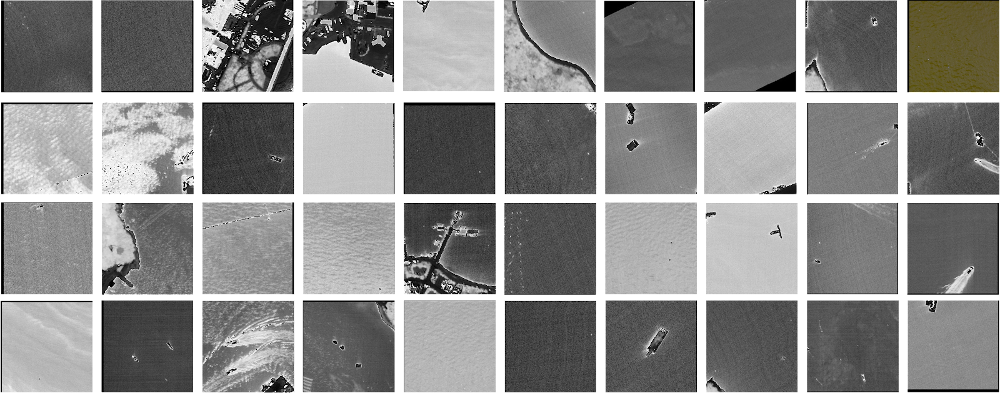
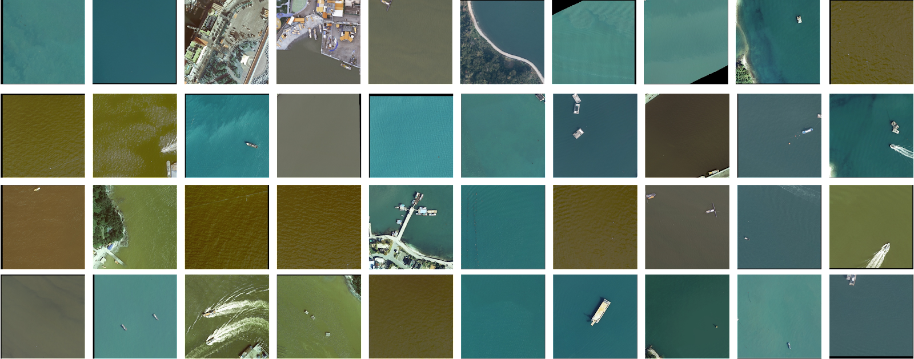
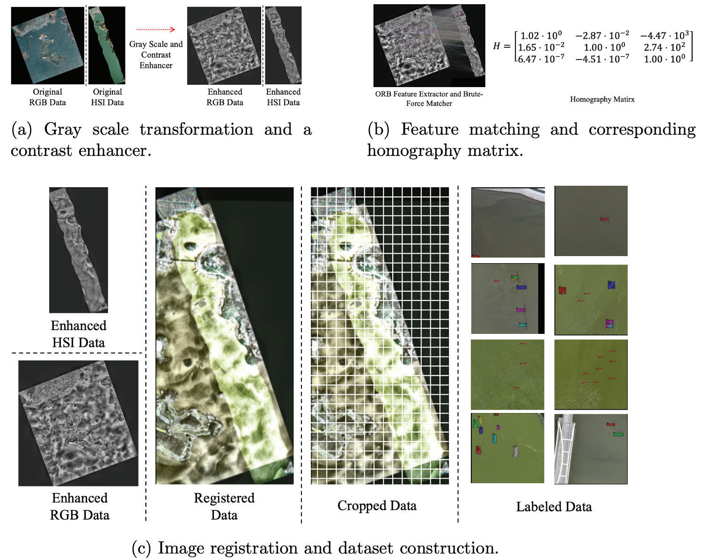

Hyperspectral Sensor Dataset Samples.

RGB Sensor Dataset Samples.
Abstract
Recently, object detection in aerial RGB, infrared, or synthetic-aperture radar images has drawn increasing research attention. Our focus is maritime object detection mainly for detecting and localizing ships and floating matters, which is an imperative task for reliable surveillance/monitoring and active rescuing. Notwithstanding astonishing advances of computer vision technologies, the task becomes challenging as cameras’ field of view and/or object distance increases. What makes it worse is pervasive sea surface effects such as sunlight reflection, wind, and waves. Hyperspectral image (HSI) sensors, providing more than 100 channels in wavelengths of visible and nearinfrared, can extract intrinsic information of materials from a few pixels of HSIs. The advent of HSI sensors motivates us to leverage HSIs to circumvent false positives due to the sea surface effects. However, there are handful public HSI datasets because collecting HSIs is monetarily costly and laborintensive. Lack of public datasets is the major hindrance to object detection research based on HSIs. We have collected and annotated a publicly available dataset “Multi-Modal Ship and flOating matter Detection in Aerial Images (M2SODAI),” which comes with 1,257 synchronized image pairs of 1600×1600 pixel RGB data and 224×224 pixel HSI data. For diversity, we did 59 flight strips in 12 flight measurement campaigns (11 different spots). The M2SODAI dataset contains 5,946 instances per category, each of which is labeled by a bounding box. To the best of our knowledge, this dataset is the first bounding-box-annotated and synchronized aerial RGB/HSI dataset. For the detection algorithm, we propose a DoubleFPN architecture, a novel multi-modal extension of the feature pyramid network (FPN). Extensive experiments on our benchmark demonstrate that fusion of RGB and HSI data can enhance mAP, especially in the presence of the sea surface effects. The source code and dataset will be available soon.
Data Collection Methods
1. Flight Campaigns for Collecting Raw Data

In the first stage, we collect RGB and HSI sensor data using a single-engine utility aircraft equipped with RGB and HSI sensors. To this end, we built a data collection system by leveraging a single-engine utility aircraft (Cessna Grand Caravan 208B). An HSI sensor (AsiaFENIX, Specim, Oulu, Finland) and an RGB sensor (DMC, Z/I Imaging, Aalen, Germany) are equipped on the bottom of the aircraft, the direction of which is downward. The raw data was acquired through 59 flight strips in 12 flight measurement campaigns, which cover a total area of 299.7 km2 . During the flight strips, the aircraft maintains its speed of 260 km/h and altitude of 1 km.
2. Image Registration

Since the size of the raw data is too large for object detection (HSI: 3,2202 pixels, and RGB: 22,5202 pixels on average), we cropped the raw data into a fixed size. We note that RGB and HSI data are cropped in size of 1600 × 1600 × 3 and 224 × 224 × 127, respectively. However, the problem is that the coordinates of the collected RGB and HSI pairs are not matched. Hence, we employ an image registration method to correct pixel offsets between RGB and HSI pairs.

(a) The RGB and HSI sensor data are transformed by a gray scaler and a contrast enhancer. (b) The matched feature of transformed sensor data and the corresponding homography matrix are obtained. (c) The sensor data are registered, cropped, and labeled.
3. Object Detection Results and Feature Map Analysis

The floating matters and ship are labeled by purple and blue colors, respectively. For comparison, the ground truth bounding boxes and our detection results are depicted.

The strongest feature among channels is selected for each pixel for visualization. In the left and right figures, the feature maps of our method and the RGB-only uni-modal FPN are depicted, in which the input data are with sea surface effects. In the middle figures, the feature maps without sea surface effects are depicted. For the data in the clean sea (middle), both methods provide clean feature maps; however, with the sea surface effects (left/right), our method furnishes clearer feature maps than the RGB-only uni-modal FPN.